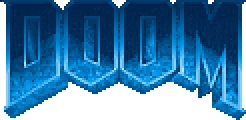

idleYou are playing. Every key sample (20 per second) becomes a 4-byte input
turn fwd strafe fire; the page packs up to 29 of them into one external message every 0.5 s and
sends it to the contract through toncenter. The contract moves the player (blockmap collisions, sliding along
walls), renders the frame and emits it; what you see is read back from testnet. Six imps stand in the hangar:
six pistol hits each (they do not fight back).
Pick a free server and press play: the contract moves the player, renders every frame inside the TVM and emits it; this page only sends your keys to the chain and reads the frames back from testnet. A server counts as free when nobody moved there for 2 minutes (no locks: it is a testnet toy). The "AI demo" server is driven by an on-chain AI that probes the level's blockmap, turns away from walls and shoots now and then. contract in explorer · source
Every transaction of the contract renders exactly one frame and emits it as an external-out message
(a message with no destination: the TVM's log channel, it costs nothing to deliver and is stored in the
block with the transaction). The contract then sends itself a small internal message (CONT,
0.1 GRAM) to render the next frame in the next transaction, up to ~10 frames per block. This page subscribes to
the contract's transactions on toncenter (WebSocket streaming with an API key, or one poll of
/api/v3/transactions per second without one) and decodes the body of every outgoing message
that has an empty destination.
The body is one cell plus a chain of cells (TL-B):
frame#4652414D // "FRAM" frameNo:uint32 // sequence number w:uint16 h:uint16 // 80 x 120 px:int32 py:int32 // player position, 16.16 fixed point map units angle:uint16 // 0..511, 512 units = 360 degrees viewz:int16 // eye height (sector floor + 41) flags:uint8 // bit 0: partial frame (gas budget hit mid-walk) queued:uint16 // inputs still queued after this frame pixels:^Cell // the picture, see below = FrameEvent;
The picture is 1 bit per pixel, stored by columns, because the renderer works in columns like Doom's (each wall segment is drawn as a run of vertical spans). One column is a 120-bit integer: the most significant bit is the top row, 1 = lit. A cell holds at most 1023 bits, so 8 columns (960 bits) go into one cell and reference 0 points to the cell with the next 8; 80 columns make a chain of 10 cells, 1200 bytes per frame. Pixels are 2:1 tall, so 80x120 is shown as 4:3.
Inside the contract the same column integer is the working data structure of the renderer: while the BSP
tree is walked front to back, each column keeps the drawn pixels in its low 120 bits and the still-open
ceiling..floor window in the bits above; an 80-bit mask marks columns that are fully closed, so later walls
skip them (occlusion). Packing the frame at the end is just column & ((1 << 120) - 1) for
each column. The decoder is ~30 lines: viewer/boc.js parses the BOC, viewer/viewer.js
reads the fields above and paints the columns onto a canvas; tools/doom.py frames does the same
into PNG files.